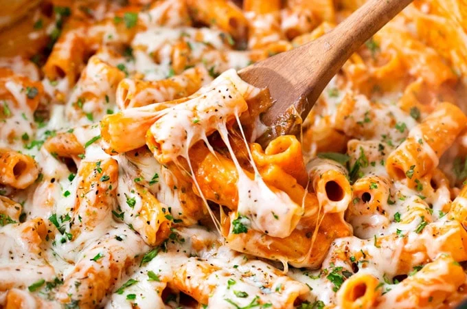

Pasta
Pasta is a type of Italian food made from durum wheat flour and water. It comes in many shapes and sizes, such as spaghetti, penne, fettuccine, and shells. Pasta is usually cooked by boiling it in water until it is tender, then it is drained and served with a sauce or other toppings. Pasta is a staple food in many countries and is enjoyed as a quick and easy meal. It can be paired with a wide variety of sauces, from simple tomato sauces to rich, creamy Alfredo sauces. Pasta is also a popular choice for entertaining, as it can be made in large quantities and is easily customizable to suit different tastes.
